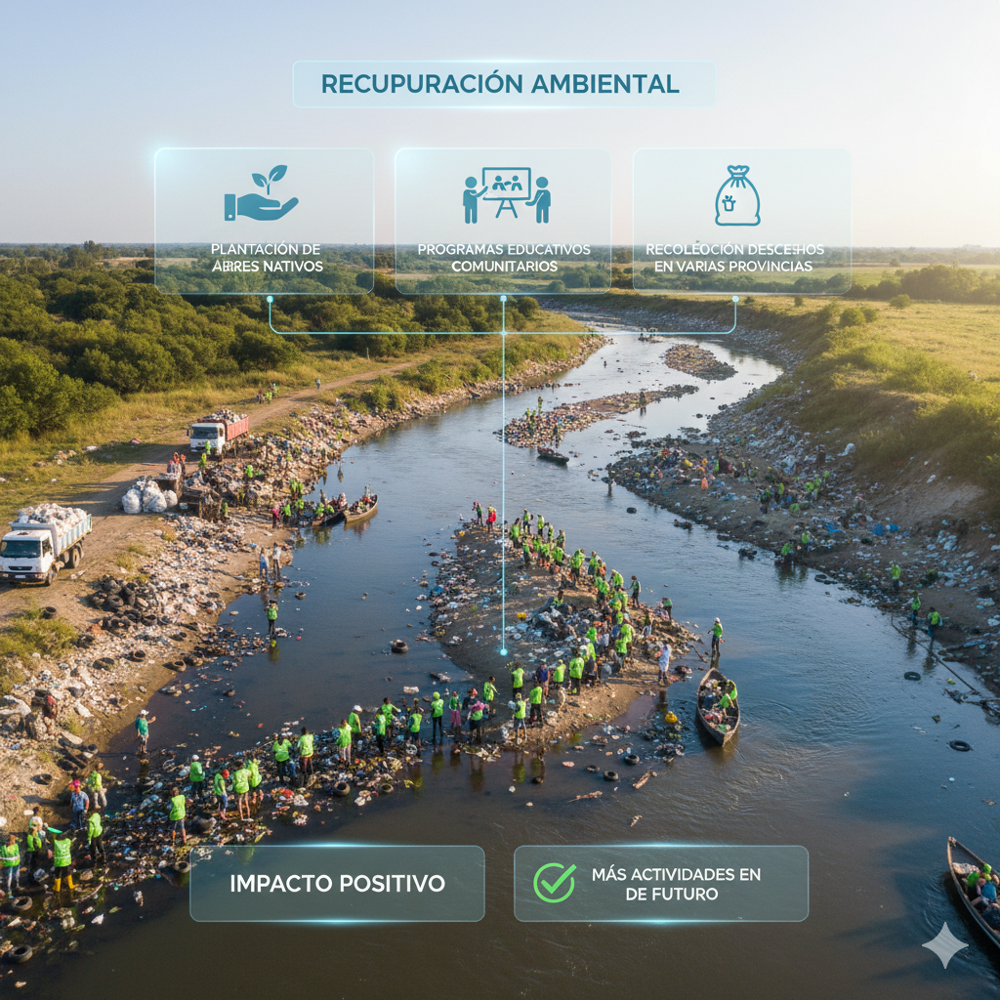
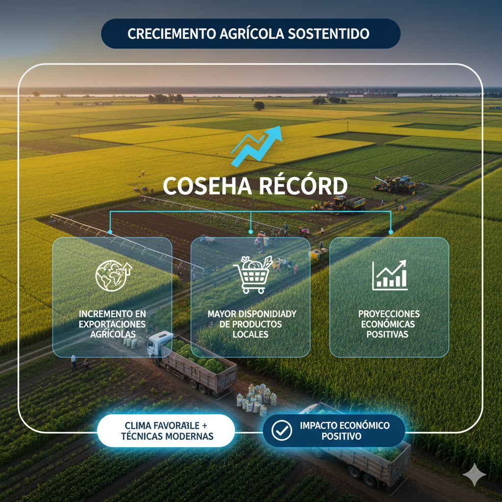

Nuevo plan de inversión pública anuncia el gobierno
El gobierno presentó un ambicioso plan de inversión pública que busca modernizar carreteras, hospitales y
centros educativos en zonas rurales.
Con un presupueso de más de 1,200 millones, el proyecto apunta a reducir desigualdades sociales y
aumentar
la empleabilidad en comunidades vulnerables.
Más de 200 obras distribuidas en todo el país.
Enfoque en infraestructura esencial.
Generación de más de 20,000 empleos.
Reforma educativa alcanza consenso entre partidos
Autor: Carlos Peña
Tras intensas negociaciones, los partidos políticos aprobaron una reforma educativa centrada en la
modernización del currículo nacional.
El acuerdo incluye inversión en tecnología escolar y mejoras para la formación de maestros.
Actualización del currículo nacional.
Más acceso a dispositivos tecnológicos.
Capacitación continua para docentes.
Iniciativa ciudadana impulsa limpieza de ríos

Por: Colectiva "Ríos Limpios"
La participación de más de 500 voluntarios permitió la recolección de toneladas de desechos en ríos
afectados por la contaminación.
Las organizaciones ambientales celebraron el impacto positivo y anunciaron más actividades en el futuro.
Recolección de desechos en varias provincias.
Plantación de árboles nativos.
Programas educativos comunitarios.
Aumento en la producción agrícola mejora previsiones

Autor: Ingrid Torres
Los productores reportaron un incremento notable en el rendimiento de cultivos como arroz, maíz y
vegetales.
Expertos atribuyen el crecimiento a condiciones climáticas favorables y nuevas técnicas de cultivo.